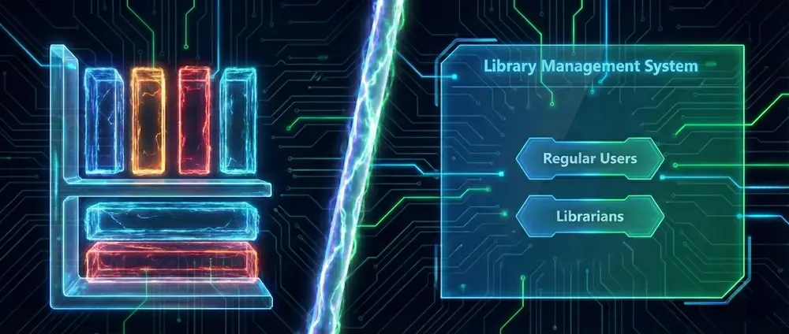
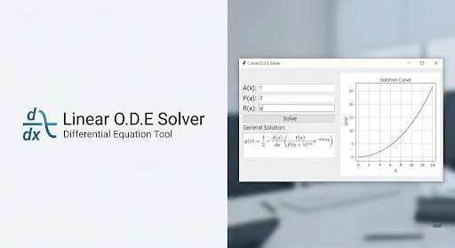
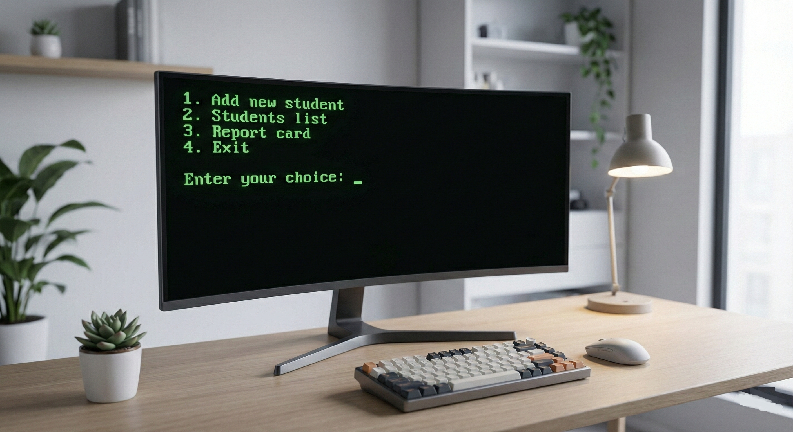

Hey

, I'm Sajjad...
I am currently working on my web development skills and learning the ropes of the industry. I'm open to opportunities where I can contribute to a team, tackle real challenges, and continue to learn from hands-on experience. I'm especially eager to be in an environment that encourages growth and allows me to constantly improve my craft...
Projects



STM
C++ / File I/OA C++ application designed to handle academic records for multiple engineering majors.

Skills & Arsenal
C++
My background in C++ development spans from creating GUI-based tools like a Library Management System with Qt to building rigorous console applications like an Airline Ticket Reservation System managed via CMake.
Qt Framework
My Qt expertise spans both C++ and Python ecosystems, illustrated by a C++ Library Management System and a Python-based Linear ODE Solver integrating Matplotlib for real-time visualization.
Catch2
Experienced in C++ Test-Driven Development (TDD), I leverage modern testing frameworks such as Catch2 to write automated tests that ensure consistent application performance.
Git
Experienced in Git, I maintain strict source control standards across my entire development portfolio, ensuring a structured and reliable history for every piece of software I create.
JavaScript
I use vanilla ES6+ JavaScript for DOM manipulation , event handling, and adding dynamic interactivity without relying heavily on external libraries.
HTML5
I prioritize semantic markup and accessibility , ensuring my applications are structured logically for both search engines and screen readers.
Tailwind CSS
My frontend development relies on Tailwind CSS for efficient and flexible styling, enabling me to rapidly prototype and deploy highly customizable, responsive web layouts.
CSS3
Experienced in creating responsive layouts using Flexbox and Grid , as well as implementing smooth keyframe animations to enhance user experience.
React
Currently exploring Component-Based Architecture and State Management to upgrade my frontend capabilities. Loading...
Journey & Experience
Education
Bachelor of Computer Engineering
University of Tehran
Currently pursuing my degree. Focusing on core computer Engineering concepts, algorithms, and system programming. Actively involved in practical coding projects and coursework.
High School Diploma
Hedayat High School
Completed secondary education with a focus on Mathematics and Physics, laying the groundwork for engineering and logical problem solving.
Technical Experience
Independent Developer
Self-Directed & Academic Projects
Although I am early in my university journey, I treat my coding projects with professional discipline. I have developed practical applications using C++ and the Qt framework, managing the full development lifecycle from design to debugging.
Application Development: Built desktop applications (Library Management, Airline Reservation) focusing on clean UI and robust logic.
Problem Solving: Developed a Linear ODE Solver using Python, integrating mathematical libraries for real-time data visualization.
Version Control: utilizing Git for all personal projects to maintain code integrity and version history.
Get in Touch
I'm currently looking for new opportunities. Whether you have a question, a project idea, or just want to say hi, I'll try my best to get back to you!
© 2026 Sajjad Ahmadi. Built with HTML, Tailwind & Vanilla JS.